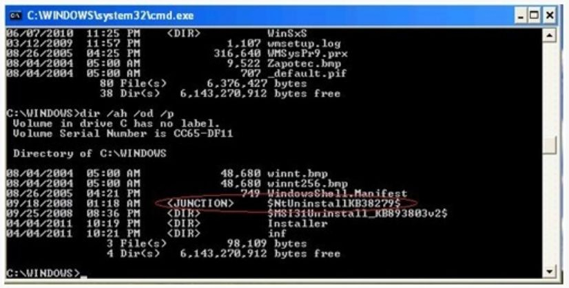

Zero Access
Win32/Sirefef a.k.a "Zero Access" is a widespread multi-component malware family of rootkits which is affecting the windows operating systems. The threat spreads majorly by exploit kits, use of pirated softwares and other malware downloaders. It uses disk-level hooking to hide itself (hide processes, related files, network activites,) in order to hinder its detection and removal on infected computer. It uses multi-layers self-defense mechanism to protect itself against security related softwares by stopping or deleting any process that attempts to access.
The Trojan is responsible for the following functions:
- Download and execute arbitrary files
- Contact foreign hosts
- Disable security features
- Modifying browser search engine results
- Generating pay-per-click revenue
- Performing Bitcoin mining
Aliases: Trojan-Dropper.Win32.PMax.a (Kaspersky, Trojan.Horse (Symantec), TrojanDropper:Win32/Sirefef.A (Microsoft), Trojan.Win32.Agent.csaf [Kaspersky], Trojan.Cryptor.A [BitDefender]Trojan.Win32.Agent.csaf [F-Secure], Mal/Crot-A [Sophos], Trojan.Agent.csaf (CAT-QuickHeal), Crot.gen.b [McAfee] , TrojWare.Win32.Agent.csaf [Comodo])
Installation:
The Trojan has been distributed by various ways such as exploit kits ( e.g. Blackhole Kit ), Malware/TrojanDownloaders ( such as TrojanDownloader: Win32/Beebone.gen!A , TrojanDownloader:Win32/Karagany.I and Win32/Dofoil family variants ) , and use of pirated softwares related to 'crack' and 'keygen'. Some of the softwares are:
- "Download Nokia Dongle.exe"
- "Facebook Password Cracker.exe"
- "autocad_2007_full_crack.exe".
The files dropped by Sirefef are as follows:
Location: c:\recycler\ [Redacted]
Files Dropped:
The registry changes made by the trojan Sirefef to ensure its persistence are as follows:
In subkey: HKLM\Software\Classes\clsid\{5839fca9-774d-42a1-acda-d6a79037f57f}\InprocServer32
Modifies value: "(Default)"
From data: " < system folder > \wbem\wbemess.dll"
With data: " " (For Example : "c:\recycler\ \n" )
To intercept and hijack network traffic, it drops the following files:
- %windir%\assembly\GAC\desktop.ini or
- %windir%\assembly\GAC_32\desktop.ini
It stops and attempts to delete Windows security services like Windows Defender (windefend), IP helper (iphlpsvc),Windows Security Center(wscsvc), windows firewall (mpssvc), Base filtering engine (bfe)
On execution Sirefef replaces a randomly-selected system driver with its own malicious copy. Some of the drivers replaced are afd.sys, i8042prt.sys, ipsec.sys, mrxsmb.sys, netbt.sys, raspppoe.sys, serial.sys. It creates a folder to retain the original copy of drivers and also for additional malware components in an encrypted and non accessible manner.
Format for the folder name is as follows:
\$NtUninstallKB $

Countermeasures:
- Perform scanning on computer for possible infection with the removal tools mentioned below.
- Exercise caution while visiting links within emails received from untrusted users or unexpectedly received from trusted users.
- Do not download and open attachments in emails received from untrusted users or unexpectedly received from trusted users.
- Exercise caution while visiting links to web pages.
- Protect yourself against social engineering attacks.
- Do not visit untrusted websites.
- Enable firewall at desktop and gateway level.
- Use strong password and also enable password policies.
- Avoid downloading pirated software.
- Keep up-to-date patches and fixes on the operating system and application softwares
- Keep up-to-date antivirus and antispyware signatures at desktop and gateway level.
- Selectively disable Java/Flash and javascript.
- Exercise caution while using external drives, disable autoplay.
References:
- http://blogs.technet.com/b/mmpc/archive/2013/02/12/msrt-february-2013-sirefef.aspx
- http://www.microsoft.com/security/portal/threat/encyclopedia/Entry.aspx?Name=Win32/Sirefef
- http://nakedsecurity.sophos.com/zeroaccess4/
- http://virusremovalstation.blogspot.in/2013/03/how-to-remove-sirefefgenc-virus-get-rid.html
- http://gmer.net/